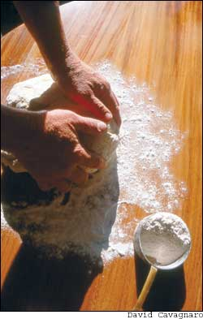

This is an excerpt from “McCay’s Miracle Loaf,” which originally appeared in the September/October 1981 issue of Mother Earth News. To see the full article, check out Mother’s Amazin’ Archive at www.MotherEarthNews.com.
McCay’s original recipe is for manual baking. If you’d like to try it in a bread machine, go to www.baking911.com/bread/machines.htm for formulas to convert regular bread recipes to be made in machines. - Mother
In the 1930s, Dr. Clive McCay, a Cornell University nutrition researcher, made a momentous discovery - he found that by feeding laboratory animals a low-calorie diet rich in minerals, vitamins and protein, he could retard the onset of old age and dramatically increase the animals’ longevity. His research attracted the attention of New York state officials, who asked him to help improve the diets of the state’s mental patients.
McCay developed a highly nutritious bread made with soy flour, wheat germ, wheat flour and dry milk. He offered the recipe to bakeries in a low-income section of Brooklyn in hopes of improving the health of the area’s impoverished residents.
Acclaimed by The New York Times as the “Do-good Loaf,” Cornell Bread attracted a wide following among bakers who praised the recipe for its delicious taste and extraordinary nutritional qualities.
The special features of the Cornell Bread that make it different from ordinary bread are the additions of soy flour, nonfat dry milk and wheat germ. Soy flour is a rich protein concentrate, with more than 40 percent protein. It supplies amino acids that are lacking in wheat as well as calcium, iron and B vitamins. Nonfat dry milk has about twice the protein value of meat. It is a good source of calcium and riboflavin. Wheat germ adds more protein, iron, B vitamins and vitamin E to the mix.
Cornell Whole-wheat Bread Place in a mixing bowl:
3 cups warm water
2 packages active dry yeast
2 tablespoons honey or molasses
2 tablespoons salad oil
3 teaspoons sea salt
1 egg
Let stand while you measure out:
3 tablespoons wheat germ
½ cup full-fat soy flour
¾ cup nonfat dry milk
5 cups whole-wheat flour, or 50/50 whole wheat and unbleached white
2 tablespoons of sesame seeds
3 tablespoons sunflower seeds or walnuts
¼ cup raisins
Blend all ingredients with a mixer or by hand until you get a sticky, loose dough (you may need more flour to shape it up). Pat dough down and clean sides of bowl. Cover. Let rise in a warm place until almost double in size, about 40 minutes. Turn onto a board and shape into 3 loaves or 2 loaves and 12 muffins. Place in oiled bread pans or muffin tins. Let rise until dough doubles. Bake at 400 degrees for 15 minutes. Reduce temperature to 350 degrees for 45 minutes, or until loaves are brown and sound hollow when tapped.
A favorite variation of the Cornell recipe is to add sprouted wheat or rye. Obtain clean kernels of wheat or rye. Cover 1 cup of whole kernels with warm water and let stand in a warm room overnight. In the morning drain the water and cover with fresh water. Let stand in a warm place for another day and night.rain several times and add fresh water. By the end of the second day, the grain will be much softer and more chewy. The 1 cupful will have swelled to 2 cups and small, white sprouts may begin to show. For the bread, put the sprouted grain through a food chopper. Add the ground-up kernels with the flour in the Cornell recipe. Add the remainder of the ingredients and proceed as usual.
- From The Cornell Bread Book by Clive and Jeanette McCay (Dover Publications).
|
 |
|
|